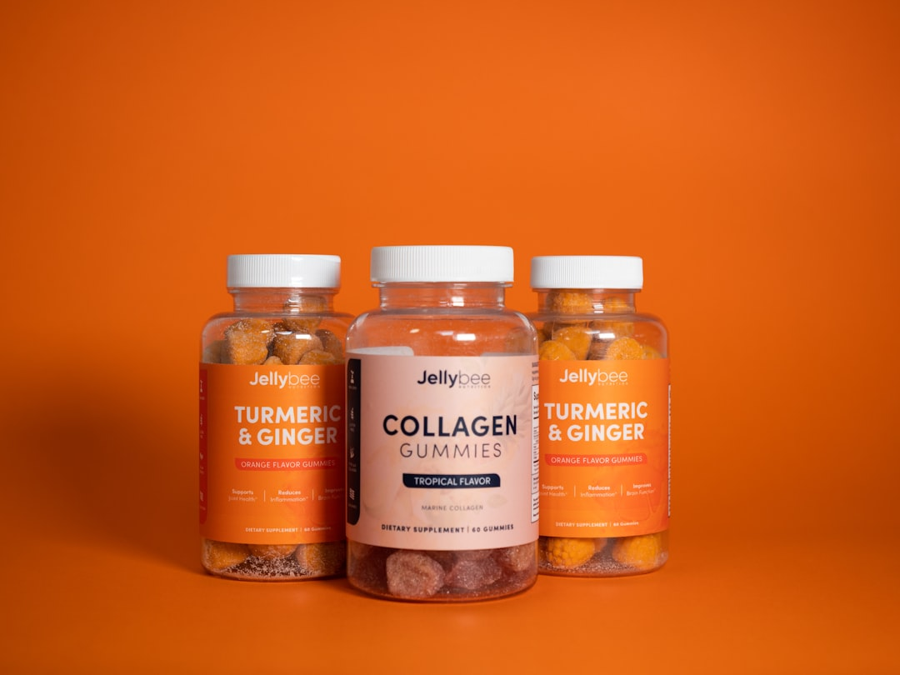
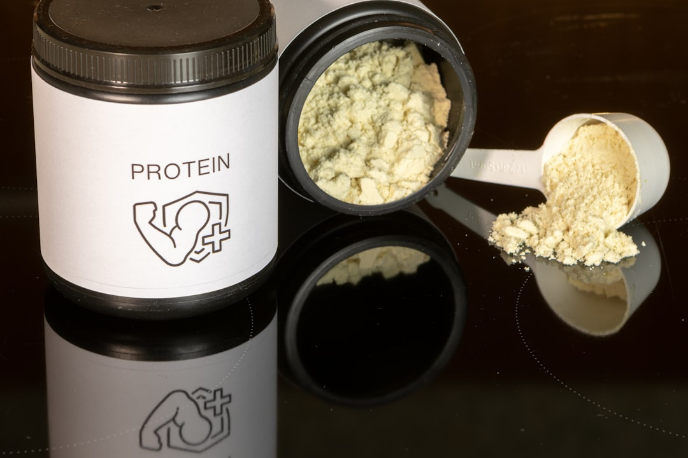

News
Biaxol UK Products
Biaxol UK Products
Product Specifications
Usage Guidelines
Market Presence of Biaxol UK
Market Presence of Biaxol UK
Distribution Channels
Competitive Analysis
Biaxol UK's Role in Advancing Sustainable Practices in Drug Manufacturing
Mar 14, 2025
Biaxol UK's Role in Advancing Sustainable Practices in Drug Manufacturing In the contemporary world, where environmental consciousness is no longer optional but imperative, industries across the spectrum are actively seeking sustainable practices.. The pharmaceutical industry, known for its intricate processes and significant resource consumption, stands at a critical juncture.

How to Maximize the Power of Biaxol UK for Extraordinary Results
Mar 14, 2025
Maximizing the Power of Biaxol UK for Extraordinary Results In today's fast-paced world, achieving outstanding results often requires leveraging the best resources available.. One such resource in the health and wellness sector is Biaxol UK.
How to Revolutionize Your Daily Routine with Biaxol UK
Mar 14, 2025
In today's fast-paced world, the daily routine has become a cornerstone of productivity and well-being.. Yet, many of us find ourselves stuck in monotonous cycles that sap our energy and enthusiasm.
How to Transform Your Lifestyle Using Biaxol UK in 7 Simple Steps
Mar 14, 2025
Transforming your lifestyle can often seem like a daunting task.. However, with the right tools and mindset, it becomes a journey of growth and empowerment.
How to Unlock Hidden Benefits of Biaxol UK You Didn't Know About
Mar 14, 2025
Unlocking Hidden Benefits of Biaxol UK: Discover What You Didn't Know In the vast landscape of pharmaceuticals and health supplements, Biaxol UK has steadily garnered attention for its impressive range of benefits.. Yet, many remain unaware of the hidden advantages this product offers beyond its primary uses.
The Impact of Biaxol UK's Innovative Technologies on the Pharmaceutical Industry
Mar 14, 2025
The Impact of Biaxol UK's Innovative Technologies on the Pharmaceutical Industry The pharmaceutical industry has long been a realm of innovation and advancement, continuously evolving to meet the pressing demands of global health challenges.. In this dynamic landscape, Biaxol UK emerges as a beacon of technological ingenuity, influencing the industry with pioneering solutions that promise to redefine drug development and delivery. Biaxol UK's journey into the pharmaceutical sector is marked by its commitment to addressing some of the industry's most persistent challenges.
What is Biaxol UK's Role in the Energy Sector?
Mar 14, 2025
Biaxol UK has emerged as a significant player in the energy sector, carving a niche through innovative solutions and sustainable practices.. As the world grapples with the dual challenges of meeting growing energy demands while reducing carbon emissions, companies like Biaxol UK are at the forefront of driving change and fostering a more sustainable future. Biaxol UK's role in the energy sector is multifaceted, reflecting a commitment to both technological advancement and environmental stewardship.

What is Driving Biaxol UK's Market Expansion?
Mar 14, 2025
Catalysts Behind Biaxol UK's Market Expansion In today's rapidly evolving global marketplace, companies must exhibit agility, innovation, and strategic foresight to achieve and sustain growth.. Biaxol UK is a striking example of an enterprise that has successfully expanded its market presence through a combination of innovative strategies and keen market insights.
What is the Impact of Biaxol UK on Renewable Energy?
Mar 14, 2025
The Impact of Biaxol UK on Renewable Energy In recent years, the pursuit of sustainable and renewable energy sources has become a pivotal objective for nations worldwide.. As the global community grapples with the pressing challenges of climate change and environmental degradation, innovative companies like Biaxol UK have emerged as game-changers in the renewable energy sector.
What is the Latest Innovation from Biaxol UK?
Mar 14, 2025
Biaxol UK has long been a beacon of innovation in the technology sector, consistently pushing boundaries and redefining what is possible.. Their latest innovation continues this legacy, marking a significant milestone not only for the company but also for industries that rely on cutting-edge technological solutions.